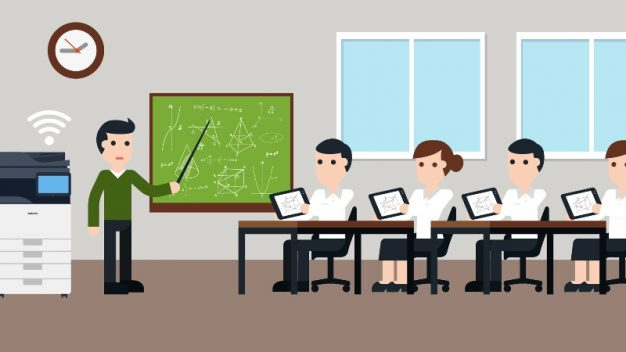

Pengertian Pendidikan dan Makna Pendidikan Menurut Para AhliPengertian Pendidikan Menurut Undang-Undang No. 20 Tahun 2003 Pendidikan adalah usaha sadar dan terencana untuk mewujudkan suasana belajar dan proses pembelajaran agar peserta didik secara aktif mengembangkan potensi dirinya untuk memiliki kekuatan spiritual keagamaan, pengendalian diri, kepribadian, kecerdasan, akhlak mulia, serta ketrampilan yang diperlukan dirinya, masyarakat, bangsa dan negara. Menurut H. Fuad Ihsan (2005: 1) menjelaskan bahwa dalam pengertian yang sederhana dan umum makna pendidikan sebagai “Usaha manusia untuk menumbuhkan dan mengembangkan potensi-potensi pembawaan baik jasmani maupun rohani sesuai dengan nilai-nilai yang ada didalam masyarakat dan kebudayaan”. Usaha-usaha yang dilakukan untuk menanamkan nilai-nilai dan norma-norma tersebut serta mewariskan kepada generasi berikutnya untuk dikembangkan dalam hidup dan kehidupan yang terjadi dalam suatu proses pendidikan sebagai usaha manusia untuk melestarikan hidupnya. Disamping itu Jhon Dewey (2003: 69) menjelaskan bahwa “Pendidikan adalah proses pembentukan kecakapan-kecakapan fundamental secara intelektual dan emosional kearah alam dan sesama manusia”. Sedangkan menurut J.J. Rousseau (2003: 69) menjelaskan bahawa “Pendidikan merupakan memberikan kita pembekalan yang tidak ada pada masa kanakkanak, akan tetapi kita membutuhkanya pada masa dewasa”. Dilain pihak Oemar Hamalik (2001: 79) menjelaskan bahwa “Pendidikan adalah suatu proses dalam rangka mempengaruhi siswa agar dapat menyesuaikan diri sebaik mungkin terhadap lingkungan dan dengan demikian akan menimbulkan perubahan dalam dirinya yang memungkinkannya untuk berfungsi secara kuat dalam kehidupan masyarakat”. “Pendidikan merupakan bimbingan atau pertolongan yang diberikan oleh orang dewasa kepada perkembangan anak untuk mencapai kedewasaanya dengan tujuan agar anak cukup cakap melaksanakan tugas hidupnya sendiri tidak dengan bantuan orang lain”. Berdasarkan pendapat diatas dapat disimpulkan bahwa pendidikan adalah usaha sadar dan terencana untuk memberikan bimbingan atau pertolongan dalam mengembangkan potensi jasmani dan rohani yang diberikan oleh orang dewasa kepada anak untuk mencapai kedewasaanya serta mencapai tujuan agar anak mampu melaksanakan tugas hidupnya secara mandiri. Pengertian di atas mengindikasikan betapa peranan pendidikan sangat besar dalam mewujudkan manusia yang utuh dan mandiri serta menjadi manusia yang mulia dan bermanfaat bagi lingkungannya. Dengan pendidikan, manusia akan paham bahwa dirinya itu sebagai makhluk yang dikaruniai kelebihan dibandingkan dengan makhluk lainnya. Bagi negara, pendidikan memberi kontribusi yang sangat besar terhadap kemajuan suatu bangsa dan merupakan wahana dalam menerjemahkan pesan-pesan konstitusi serta membangun watak bangsa (nation character building). Menurut Redja Mudyahardjo (dalam Sulistiawan, 2008: 18) pengertian pendidikan dapat dibagi menjadi tiga, yakni secara sempit, luas dan alternatif. Definisi pendidikan secara luas adalah mengartikan pendidikan sebagai hidup. Pendidikan adalah segala pengalaman belajar yang berlangsung dalam lingkungan dan sepanjang hidup (long life education). Pendidikan adalah segala situasi hidup yang mempengaruhi pertumbuhan individu. Secara simplistik pendidikan didefinisikan sebagai sekolah, yakni pengajaran yang dilaksanakan atau diselenggarakan di sekolah sebagai lembaga pendidikan formal. Pendidikan adalah segala pengaruh yang diupayakan terhadap anak dan remaja yang diserahkan kepadanya agar mempunyai kemampuan yang sempurna dan kesadaran penuh terhadap hubunganhubungan dan tugas sosial mereka. Secara alternatif pendidikan didefinisikan sebagai usaha sadar yang dilakukan oleh keluarga, masyarakat dan pemerintah, melalui kegiatan bimbingan, pengajaran atau latihan yang berlangsung di sekolah dan luar sekolah sepanjang hayat untuk mempersiapkan peserta didik agar dapat memainkan peranan dalam berbagai lingkungan secara tepat di masa yang akan datang. Pendidikan adalah pengalamanpengalaman belajar yang memiliki programprogram dalam pendidikan formal, nonformal ataupun informal di sekolah yang berlangsung seumur hidup yang bertujuan mengoptimalisasi pertimbangan kemampuankemampuan individu, agar dikemudian hari dapat memainkan peranan secara tepat. Sekolah adalah institusi sosial yang didirikan oleh masyarakat untuk melaksanakan tugastugas pendidikan kepada generasi muda. Dalam konteks ini pendidikan dimaknai sebagai proses untuk memanusiakan manusia untuk menuju kepada kemanusiaannya yang berupa pendewasaan diri. Melalui pendidikan disemaikan pola pikir, nilainilai, dan normanorma masyarakat dan selanjutnya ditransformasikan dari generasi ke generasi untuk menjamin keberlangsungan hidup sebuah masyarakat. Dalam konteks sekolah sebagai lembaga yang melaksanakan transformasi nilainilai budaya masyarakat, terdapat tiga pandangan untuk menyoal hubungan antara sekolah dengan masyarakat, yakni perenialisme, esensialisme dan progresivisme. Pandangan perenialisme, sekolah bertugas untuk mentransformasikan seluruh nilai-nilai yang ada dalam masyarakat kepada setiap peserta didik, agar peserta didik tidak kehilangan jati diri dan konteks sosialnya. Esensialisme melihat tugas sekolah adalah menyeleksi nilainilai sosial yang pantas dan berguna untuk ditransformasikan pada peserta didik sebagai persiapan bagi perannya di masa depan. Peran sekolah yang lebih maju ada pada progresivisme yang menempatkan sekolah sebagai agen perubahan (agent of change) yang tugasnya adalah mengenalkan nilai-nilai baru kepada peserta didik yang akan mengantarkan peran mereka di masa depan. Menurut Hoy dan Kottnap (dalam Harmanto, 2008 : 7) terdapat sejumlah nilai budaya yang dapat ditransformasikan sekolah kepada diri setiap peserta didik agar mereka dapat berperan secara aktif dalam era global yang bercirikan persaingan yang sangat ketat (high competitiveness), yakni: (1) nilai produktif, (2) nilai berorientasi pada keunggulan (par excellence), dan (3) kejujuran. Nilai yang berorientasi pada keunggulan adalah identik dengan motivasi berprestasi seseorang. Moral kejujuran adalah moral universal, moral yang dijunjung tinggi oleh bangsabangsa modern dan beradab. Bangunan masyarakat yang sehat adalah yang didasarkan atas nilainilai kejujuran. Kejujuran pada gilirannya akan menumbuhkan kepercayaan (trust), dan kepercayaan merupakan salah satu unsur modal sosial. Untuk itu tugas pendidikan adalah menanamkan nilainilai kejujuran kepada setiap komponen di dalamnya, baik itu siswa, staff guru maupun komponen lainnya. Pendidikan anti korupsi adalah pendidikan yang berkaitan dengan caracara untuk menanamkan nilai-nilai kejujuran pada diri peserta didik melalui serangkaian cara dan strategi yang bersifat edukatif. Pendidikan mempunyai makna yang lebih luas dari pembelajaran, tetapi pembelajaran merupakan sarana yang ampuh dalam menyelenggarakan pendidikan. Jadi pembelajaran merupakan bagian dari pendidikan. Pendidikan sebagai usaha sadar yang dilakukan oleh keluarga, masyarakat dan pemerintah melalui kegiatan bimbingan, pembelajaran, dan atau latihan yang berlangsung di sekolah dan di luar sekolah. Usaha sadar tersebut dilakukan dalam bentuk pembelajaran di kelas, dimana ada pendidik yang melayani para siswanya melakukan kegiatan belajar, dan pendidik menilai atau mengukur tingkat keberhasilan belajar siswa tersebut dengan prosedur yang telah ditentukan. Proses pembelajaran merupakan proses yang mendasar dalam aktivitas pendidikan di sekolah. Dari proses pembelajaran tersebut siswa memperoleh hasil belajar yang merupakan hasil dari suatu interaksi tindak belajar yaitu mengalami proses untuk meningkatkan kemampuan mentalnya dan tindak mengajar yaitu membelajarkan siswa. Untuk lebih jelas tentang konsep pembelajaran penulis uraikan dalam pokok bahasan tersendiri tentang pembelajaran. Makna Pendidikan Makna pendidikan secara sederhana dapat diartikan sebagai usaha manusia untuk membina kepribadiannya sesuai dengan nilai-nilai di dalam masyarakat dan kebudayaannya. Dengan demikian, bagaimanapun sederhananya peradaban suatu masyarakat, di dalamnya terjadi atau berlangsung suatu proses pendidikan. Karena itulah sering dinyatakan pendidikan telah ada sepanjang peradaban umat manusia. Pendidikan pada hakikatnya merupakan usaha manusia melestarikan hidupnya. Pendidikan menurut pengertian Yunani adalah “pedagogik” yaitu ilmu menuntun anak, orang Romawi memandang pendidikan sebagai “educare”, yaitu mengeluarkan dan menuntun, tindakan merealisasikan potensi anak yang dibawa dilahirkan di dunia. Bangsa Jerman melihat pendidikan sebagai “Erzichung” yang setara dengan educare, yakni membangkitkan kekuatan terpendam atau mengaktifkan kekuatan/potensi anak. Dalam bahasa Jawa pendidikan berarti panggulawentah (pengolahan), mengolah, mengubah, kejiwaan, mematangkan perasaan, pikiran dan watak, mengubah kepribadian sang anak. Sedangkan menurut Herbart pendidikan merupakan pembentukan peserta didik kepada yang diinginkan sipendidik yang diistilahkan dengan Educere. ( M.R. Kurniadi,STh;1) Dalam kamus besar Bahasa Indonesia, pendidikan berasal dari kata dasar “didik” (mendidik), yaitu memelihara dan memberi latihan (ajaran pimpinan) mengenai akhlak dan kecerdasan pikiran. Sedangkan pendidikan mempunyai pengertian proses pengubahan dan tata laku seseorang atau kelompok orang dalam usaha mendewasakan manusia melalui upaya pengajaran dan latihan, proses perluasan, dan cara mendidik. Ki Hajar Dewantara mengartikan pendidikan sebagai upaya untuk memajukan budi pekerti, pikiran serta jasmani anak, agar dapat memajukan kesempurnaan hidup dan menghidupkan anak yang selaras dengan alam dan masyarakatnya. |